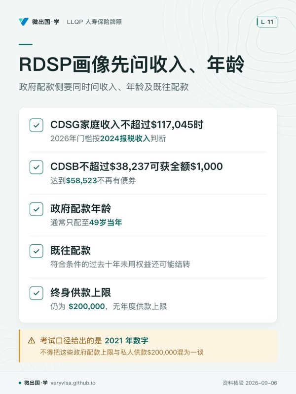

🃏 Flashcards · 3 闪卡 · 3 张 🖼 Slides · 2 幻灯 · 2 页 ✍️ Questions · 8 刷题 · 8 道
意外与疾病 Accident & Sickness P1 必拿分 P1 Must score
ZH EN ZH + EN
先看这一章怎么考 First, how this chapter is tested
情景缺口计算题：给定税前月薪、团体长期伤残险（Group LTD）比例、保费缴纳方与有效税率，结合政府给付直接抵消（Direct Offset），要求算出真实税后收入替代率或每月保障缺口。 Scenario-based gap calculation questions: Given gross monthly earnings, group long-term disability (LTD) replacement percentage, premium payor, and effective tax rate, combined with government benefit direct offsets, calculate the true after-tax income replacement rate or the net monthly coverage gap. 雇员与自雇者对比题：给出自由职业者或小企业主的收入结构（含营业开支、股息或租金）与申请就业保险特别福利（EI Special Benefits）的意向，考查可保劳动收入核定、12个月注册等待期及双风险敞口。 Employee versus self-employed comparison questions: Given the income structure of a freelancer or small business owner (including business operating expenses, dividends, or rental income) and an intent to apply for Employment Insurance (EI) special benefits, evaluate insurable earned income, the 12-month registration waiting period, and dual risk exposures. 财务工具与测算方法辨析题：客户面临保费预算受限或需要评估等待期自我承担能力，要求在收入法（Income Approach）与支出法（Expense Approach）、净资产表（Net Worth Statement）与现金流量表（Cash Flow Statement）之间做出正确匹配。 Financial tool and calculation methodology distinction questions: When a client faces premium budget constraints or needs to evaluate self-insurance capacity during an elimination period, correctly match between the income approach and expense approach, and between the net worth statement and cash flow statement. 最常丢分的陷阱（看到题干信号就警觉） Traps that cost the most marks (watch for the signal in the stem)
净收入与毛收入口径混淆 Net Versus Gross Income Confusion Trap 题干同时出现税前收入（Gross Income）、有效税率（25%）以及雇主全额支付保费（Employer-paid premiums）或应税的 CPP-D。 The question stem simultaneously mentions gross income, an effective tax rate (e.g., 25%), and employer-paid premiums or taxable CPP-D benefits. 自雇总营收当成可保收入 Mistaking Gross Business Revenue for Insurable Income Trap 题干出现自雇者（Self-employed）、营业总收入、经营开支、被动投资收入，或刚在 MSCA 注册未满 12 个月。 The question stem mentions a self-employed individual, gross business revenue, operating expenses, passive investment income, or an MSCA registration under 12 months. 漏算政府给付抵消与假设必批 Overlooking Government Benefit Offsets and Assuming Guaranteed Approval Trap 题干提到团体主合同含直接抵消条款（Direct Offset）、85% 全来源上限，或客户刚提交 CPP-D 申请尚未获批。 The question stem mentions that the group master contract contains a direct offset clause, an 85% all-source maximum, or a newly submitted CPP-D application that has not yet been approved. 本章考点页：导图、要点表、7 道带逐项解析的练习 →
核实日期：2026-09-05｜本页现行数字的出处：EI 病假福利（Government of Canada (ESDC)（论坛解读） ）、CPP 伤残给付金额（Government of Canada (ESDC)（论坛解读） ）、WorkSafeBC 工资损失给付（WorkSafeBC（论坛解读） ）、BC MSP（BC 省政府（论坛解读） ）。
复核周期：2027-09-01（先核 EI 临时措施窗口，官方已延至 2027-10-09 前开始的新申领；年度数字另在2027年1月复查）。EI 与 CPP-D 的金额每年调整；RDSP 供款上限、EI 600小时门槛、WorkSafeBC年度上限、自雇者EI注册细则、EI家庭补充资格线、RDSP配款与追回规则均已回源。
0. 这一篇解决什么问题
你要考的是 意外与疾病保险模块（Accident and Sickness Insurance） ，本篇对应 CISRO 能力组件 c1「评估客户需求与处境」，占本模块 35% ——是全模块四个能力组件里权重最大的一块，比排第二的「分析可用产品」（c2，30%）还要重。本章先把家庭现金流、现有保障和健康资料问全，再进入产品比较；考纲权重不能当作销售错误成因的统计。
这一篇讲的不是「伤残险怎么赔」（那是本模块另一篇专讲的内容，这里不重复），而是代理人在建议任何产品之前，必须先把哪些数字问出来、按什么顺序拼起来、最后得出「缺不缺、缺多少」这个结论。这一篇帮你做到三件事：① 拿出一张客户画像信息清单，知道每一类字段是为了回答哪个后续问题；② 给定一组收入、支出与既有保障数字，一步步算出税后收入替代率与保障缺口；③ 判断自雇者与雇员在同一张清单上要填的内容有什么系统性不同。
一、制度设计与底层逻辑：为什么「评估客户需求」占了模块权重的三分之一 本节回答 This section answers 画像九板块用途、实物收入及雇员与自雇者画像差异 Purpose of the nine profiling blocks, in-kind income, and profiling distinctions between employees and the self-employed 本章考题 1 Question 1
1. 客户画像不是问卷，是给风险定价前的证据链
伤残险的核保与需求测算都建立在一个前提上：客户当下的收入、负债与既有保障是可验证的事实，不是客户自己的印象。代理人收集的不是「客户觉得自己缺多少」，而是能拿报税表、工资单、团体福利手册、净资产清单逐项对上的证据。这条底层逻辑决定了客户画像的每一个字段都要能回答一个后续问题——问不出用途的字段不该问，问不到证据的数字不该用。
由此产生本章的第一条纪律：画像先于推荐，推荐先于合同。跳过画像直接推荐产品，是代理人执业风险最集中的一类失误——监管方审查投诉时，第一个要看的文件往往就是这份画像记录有没有做全、做实。
2. 客户画像信息清单：九个板块，每一格都对应一个后续判断
ℹ️
「实物收入」也是收入的一种
考试口径把「居家照护者的替代价值」「社区互助项目」这类不直接产生现金但实际替代了开支的贡献，单独列为一类收入（in-kind income）。一位全职照顾家庭的配偶如果因意外失能，家庭要另花钱雇人顶替她的家务与照护工作——这笔隐性成本在做需求测算时经常被完全漏掉。
3. 自雇者与雇员：同一张清单，答案系统性不同
图：雇员与自雇者画像——同一张清单，答案系统性不同
节末检索小测 · 先别往回翻，凭记忆作答 Quick recall check: answer from memory before scrolling back
Nadia is a self-employed graphic designer who earned $72,000 in gross business revenue last year, incurred $12,000 in deductible business expenses (leaving $60,000 in net business income, or $5,000 per month), and received $6,000 in ongoing rental income from a basement suite. Her spouse stays home full-time to care for their young children. When building the family's client profile for disability insurance needs analysis, how should the agent treat Nadia's income figures and her spouse's household role?
Nadia 是一名自雇平面设计师，去年营业总收入为 $72,000，可扣减经营开支为 $12,000（净经营收入为 $60,000，即每月 $5,000），此外从地下室套房获得持续性租金收入 $6,000。她的配偶全职在家照护年幼子女。在为该家庭建立伤残保险需求分析的客户画像时，代理人应如何处理 Nadia 的收入数字以及她配偶的家庭角色？
a Use $72,000 as Nadia's insurable earned income based on gross business revenue, and exclude the spouse because the spouse generates no cash income. ✗ 错误。落入「自雇总营收当成可保收入」与漏算实物收入（In-kind income）陷阱：自雇者必须先扣除经营开支核定劳动性净经营收入，持续性租金列为其他资源而非直接叠加进可保劳动收入；全职照护配偶的替代价值也不可忽略。 Incorrect. Falls into the trap of Mistaking Gross Business Revenue for Insurable Income and Omitting In-Kind Income: Self-employed individuals must first deduct operating expenses to determine net earned income, ongoing rent is classified as other financial resources rather than added directly to insurable earned income, and the replacement value of a stay-at-home caregiving spouse cannot be overlooked.
b Use $60,000 in net business income as the basis for Nadia's insurable earned income while recording the $6,000 rental income separately, and account for the spouse's childcare contribution as in-kind income. ✓ 正确。自雇者的可保劳动收入基础是扣除经营开支后的劳动性净经营收入（Earned income，$72,000 − $12,000 = $60,000），持续性租金归入非劳动所得（Unearned income）另行评估；全职居家照护配偶的贡献属于实物或替代性收入（In-kind income），一旦失能家庭需花钱请人顶替，必须纳入画像。 Correct. The insurable earned income base for a self-employed individual is net business earnings after operating expenses ($72,000 - $12,000 = $60,000), while ongoing rental income is categorized under unearned income and evaluated separately; the caregiving contribution of a stay-at-home spouse represents in-kind income that must be factored into needs analysis because the family would incur replacement costs if that spouse were disabled.
c Combine her net business income with the $6,000 rental income to raise her insurable earned income, and record the spouse's role only under family medical history. ✗ 错误。落入「混淆劳动所得与非劳动所得」陷阱：持续性租金不会因 Nadia 失能而必然中断，不能直接加总用来抬高可保劳动收入额度，且配偶的照护价值属于财务需求测算中的实物收入而非病史。 Incorrect. Falls into the Conflating Earned and Unearned Income trap: Ongoing rental income does not necessarily halt upon Nadia's disability and cannot be summed to inflate insurable earned income, and spousal caregiving value represents in-kind income in financial needs analysis rather than medical history.
d Use Nadia's most recent monthly invoice total to establish her insurable income like an employee's T4 pay stub, and assume standard Employment Insurance sickness benefits will cover her waiting period. ✗ 错误。落入「混淆雇员与自雇者画像标准」陷阱：自雇者需凭近两三年报税表（T1）及财务报表核实净收入而非单月账单，且自雇者默认不参加就业保险特别福利（EI special benefits）。 Incorrect. Falls into the Conflating Employee and Self-Employed Profiling Standards trap: Self-employed individuals must verify net income using the past two to three years of tax returns (T1) and financial statements rather than single-month invoices, and self-employed persons are not automatically enrolled in EI special benefits.
看答案与每个选项的解析 Show the answer and why each option is right or wrong 答案 Answer ：b
二、2026 现行政策与数字：考试口径写的和柜台用的不是一回事 本节回答 This section answers EI病假双口径、CPP-D判定及RDSP供款追回规则 EI sickness dual benchmarks, CPP-D adjudication criteria, and RDSP contribution and clawback rules 本章考题 2 Question 2
客户画像这一章大量引用政府给付项目的具体数字，而这些数字每年都在动——这也是本模块考试口径过期密度第二高的一章（EI/CPP-D/WorkSafeBC 的具体数字全部在此，且考试口径自带 2021/2022 年份）。
1. 考场与现行对照表：EI 病假周数在画像里的位置
✕
「EI 是第二付款人」不等于「EI 一定能领到」
团体计划的给付比例如果已经高于 EI 55% 的替代比例（尤其是叠加 $729/周上限之后），EI 在实际发放中可能一分钱都拿不到——不是「EI 会补一点」，而是团体给付本身已经封顶了 EI 所能给的部分。画像时不能想当然地把 EI 算成一笔额外收入，要先比较两者的实际给付水平。
2. 政府给付侧的 2026 现行数字快照
CPP-D 须同时满足年龄、缴费和医学条件。「严重」指伤残使人经常不能从事实质有收益的工作；「持久」指长期、期限不确定或很可能致死，不要求绝对没有任何有报酬活动。通常从认定严重且持久伤残开始四个月后起付，起日和金额看ESDC决定书；不能把事故日、诊断日或最高月额自动当作获批依据。CPP与QPP规则应分别核实。
3. RDSP：考试口径给出的是 2021 年数字
注册残疾储蓄计划（Registered Disability Savings Plan，RDSP）用于符合 DTC 等条件者的长期储蓄。CRA 现行指南确认：终身供款上限仍为 $200,000 ，无年度供款上限，可供至受益人 59 岁当年末 ；一般新开户也以未满60岁为界，同一受益人的计划转移有例外。供款不抵税，投资收益在计划内递延纳税；取出时私人供款部分不计收入，政府配款、rollover及投资收益部分计收入。不要把「59岁前申请」与「59岁当年仍可办理」混为一谈。canada.ca（论坛解读）
政府配款侧要同时问收入、年龄及既往配款。ESDC公布2026年门槛按2024报税收入判断：CDSG在家庭收入不超过$117,045时，首$500配3:1、次$1,000配2:1，常规年最高$3,500；超过该门槛则首$1,000配1:1。CDSB无需供款，收入不超过$38,237可获全额$1,000，介于$38,237与$58,523间递减，达到$58,523不再有债券。CDSG终身最高$70,000、CDSB终身$20,000，通常只配至49岁当年；符合条件的过去十年未用权益还可能结转，grant某年可达$10,500。不得把这些政府配款上限与私人供款$200,000混为一谈。
提款则另核协助保留金额（AHA）：普通情形按每取$1追回最多$3政府配款并以适用AHA为限，但年龄、失去DTC及指定短寿命安排可能改变追回规则。先取开户机构的配款历史和正式提款试算，再把可用净额放进家庭现金流，不能把所有提款都概括为必追回过去十年款项。
ℹ️
考试口径里的一些统计数字纯粹是背景陈述，不必较真
例如考试口径引用 2010 年 Bank of Canada 研究「加拿大成年人 80% 持有至少一张信用卡」，这类数字用来说明负债结构的普遍性，机制性描述长青，但数字本身已经陈旧，画像时不需要拿它去核对客户的真实情况。
节末检索小测 · 先别往回翻，凭记忆作答 Quick recall check: answer from memory before scrolling back
Clara qualifies for the Disability Tax Credit (DTC) and holds a Registered Disability Savings Plan (RDSP). Her family has received $3,500 per year in Canada Disability Savings Grants (CDSG) over the past 10 years and wants to know the lifetime private contribution limit, the age deadlines for private contributions versus government grants and bonds, and the standard repayment rule on withdrawals. Which statement is accurate?
Clara 符合残疾税收抵免（DTC）资格并持有注册残疾储蓄计划（RDSP）。她的家庭在过去 10 年间每年获得 $3,500 的加拿大残疾储蓄津贴（CDSG），希望了解终身私人供款上限、私人供款与政府津贴及债券的年龄截止线，以及普通提款的配款追回规则。下列哪项表述是准确的？
a The $200,000 lifetime limit includes both private contributions and the $70,000 maximum CDSG, and all contributions must stop by age 49. ✗ 错误。落入「混淆私人供款上限与政府配款上限及截止年龄」陷阱：RDSP 终身上限 $200,000 仅针对私人供款（Private contributions），政府津贴（CDSG 终身上限 $70,000）与债券（CDSB 终身上限 $20,000）单独核算，且私人供款可至 59 岁当年末。 Incorrect. Falls into the Conflating Private Contribution Limits with Government Grant Maximums and Cut-Off Ages trap: The $200,000 lifetime limit applies only to private contributions, while government grants (CDSG lifetime maximum $70,000) and bonds (CDSB lifetime maximum $20,000) are tallied separately, and private contributions can continue until December 31 of the year the beneficiary turns 59.
b Private contributions are tax-deductible in the year they are made, and any withdrawal she makes today will consist solely of a tax-free return of her family's original capital. ✗ 错误。落入「混淆 RDSP 与注册退休储蓄计划税务规则」陷阱：RDSP 私人供款不可抵税（Not tax-deductible），投资收益在计划内递延纳税，提款时政府配款与投资收益部分均须计入应税收入。 Incorrect. Falls into the Conflating RDSP and RRSP Tax Rules trap: Private RDSP contributions are not tax-deductible, investment growth accumulates tax-deferred within the plan, and upon withdrawal government grants and investment earnings are included in taxable income.
c Private contributions: $200,000 lifetime, no annual cap, until the year the beneficiary turns 59; grants and bonds end after the year of 49; ordinary withdrawals repay $3 per $1, up to the holdback. ✓ 正确。注册残疾储蓄计划（Registered Disability Savings Plan，RDSP）终身私人供款上限为 $200,000（无年度上限），可供至受益人 59 岁当年末；政府配款（CDSG 终身最高 $70,000、CDSB 终身最高 $20,000）通常只配至 49 岁当年；普通情形下提款按每取 $1 追回最多 $3 政府配款，并以过去 10 年协助保留金额（Assistance Holdback Amount，AHA）为限。 Correct. The Registered Disability Savings Plan (RDSP) features a $200,000 lifetime private contribution limit (no annual limit) permitted until the end of the calendar year the beneficiary turns 59; government grants and bonds (CDSG lifetime maximum $70,000, CDSB lifetime maximum $20,000) are typically paid only until age 49; standard withdrawals trigger a clawback of up to $3 in grants for every $1 withdrawn, capped by the Assistance Holdback Amount (AHA) from the preceding 10 years.
d She can continue receiving new Canada Disability Savings Grants until the end of the year she turns 59, as long as her family keeps contributing at least $1,000 to the plan every year. ✗ 错误。落入「混淆私人供款截止年龄与政府配款截止年龄」陷阱：私人供款可至 59 岁当年末，但政府配款（CDSG 与 CDSB）只配至受益人 49 岁当年年末。 Incorrect. Falls into the Conflating Private Contribution Cut-Off Age with Government Grant Cut-Off Age trap: Private contributions may be made until age 59, but government matching grants (CDSG and CDSB) cease at the end of the year the beneficiary turns 49.
看答案与每个选项的解析 Show the answer and why each option is right or wrong 答案 Answer ：c
三、实务流程：从事实发现到缺口结论 本节回答 This section answers 收入法与支出法取舍、税后替代率与抵消精算及四情形判定 Choosing between the income and expense approaches, after-tax replacement rate calculations, direct offsets, and four coverage adequacy scenarios 本章考题 3 Question 3
1. 收入法 vs 支出法：两把尺子，怎么选
测算 DI 需求有两种常用方法，考试口径称为 income approach（收入法）与 expense approach（expense approach，支出法）：收入法按税前收入的固定比例（常见 60%）测算，给出的通常是一个偏高、标准化的数字；支出法按客户实际生活开支逐项测算，给出的数字往往更低、也更贴近客户当下能负担的保费预算。两者常常给出不同结论，这不是哪一个算错了，而是它们回答的问题本来就不一样：收入法回答「维持原有生活水准大致需要多少」，支出法回答「不至于崩溃的最低限度是多少」。代理人的取舍标准是可负担性——如果收入法给出的保费超出客户预算，不是放弃投保,而是改用支出法先确保底线,再随收入增长逐步补足。
2. 缺口计算逐步算例一：税后收入替代率
列治文注册护士 Lena，税前年薪 $72,000，即税前月收入 $6,000。她的团体 LTD 比例是月薪的 60%，保费由雇主全额支付（因此给付需要缴税）。假设工资与本例LTD各自的有效税负均为25%（示例，仅作教学演示，非精确报税结果）。
税后月收入 ＝ $6,000 × (1 − 25%) ＝ $4,500
团体 LTD 名义给付 ＝ 60% × $6,000 ＝ $3,600（应税）
给付到手 ＝ $3,600 × (1 − 25%) ＝ $2,700
税后收入替代率 ＝ $2,700 ÷ $4,500 ＝ 60%
这是本节最容易被误判的一步：很多人以为伤残险给付一般免税，所以「60% 的保额」落到手上会接近税后收入的 80% 左右——那条经验值只适用于免税给付（例如员工自付保费的团体 LTD，或个人自购的 DI）。当保费由雇主支付、给付本身要缴税时，只有在本例两项有效税负同为25%的假设下，税后替代率才与名义比例相同；实际全年收入、扣除和抵免不同，税率也可能不同，不会因为「伤残险通常免税」这句话而自动升高。判断的第一步永远是先确认这份保单的保费是谁付的，再决定给付要不要缴税，最后才能算出真实的税后替代率。
3. 缺口计算逐步算例二：团体 LTD + EI + CPP-D 之后还缺多少
素里电信技术员 Owen，税前月薪$6,000、最低家庭生活需要$4,500/月。本例假定已过LTD等待期，员工全额自付保费的LTD名义给付为50%，即免税$3,000/月，且实际合同会逐元抵消CPP-D，再核85%全来源上限。EI是否可领须按ESDC规则独立判断；下例假设该期间无EI给付，不能仅凭$3,000月额与$729周额比较就推导为零。
考试口径与现行口径 ：考试口径（2022 年版）§6.5.2.2 的起付表述指伤残月份之后的第四个月，并不是把伤残当月算作首月后从第四个月起领；现行 ESDC 页也写认定严重且持久伤残开始四个月后起付。此处是原讲解对月份的误读，未发现这项 CPP 规则的考试口径／现行冲突。考试按指定考试口径和题干，实务按 ESDC 决定书核资格及起付日，QPP 须另核。（考试口径定位：§6.5.2.2；考试口径版本入口 ；ESDC 现行页，canada.ca（论坛解读） ）
第一阶段（已过LTD等待期、CPP-D尚未起付） ：
- LTD到手：$6,000×50%=$3,000/月。
- 每月缺口：$4,500−$3,000=$1,500。
- 在更早的LTD等待期内，另需按STD、EI资格及储备算缺口，不能由此表假定伤残第一天就有LTD。
第二阶段（CPP-D获批并按决定书起付） ：
- 仅为算术演示，假定CPP-D每月为$1,234.68；这是自拟示例数，接近官方2025年10月新受益人平均快照$1,236.32，不代表Owen应获这个数。
- 先按本例合同直接抵消：LTD=$3,000−$1,234.68=$1,765.32。
- CPP-D属应税收入；假定其有效税负25%，净额=$926.01。
- 到手合计=$1,765.32+$926.01=$2,691.33；低于85%上限不表示可取消已经适用的直接抵消。
- 每月缺口=$4,500−$2,691.33=$1,808.67。
这个例子说明，多一个给付来源并不保证税后缺口缩小。若合同不直接抵消CPP-D，结果会不同；但CPP-D税前金额仍不能直接与免税LTD相加后称为到手收入。方案应分别展示等待期、LTD起付、政府待遇获批及定义切换后的净额，按实际缺口、可保额度和储备选择组合，不能只用最高金额或长期平均值作承诺。
4. 净资产表与现金流量表：两张财务快照，各回答不同的问题
净资产表（net worth statement）＝资产（按公允市值）减负债，回答的是「客户能不能靠自己扛过一段收入中断或一笔医疗急支」；现金流量表（cash flow statement）＝净收入减支出按月追踪，回答的是「客户每月有没有余钱付保费、有哪些开支可以削减」。两者在客户画像里各司其职：净资产表判断的是自我承担能力，现金流量表判断的是保费可负担性，不能用其中一张替代另一张的结论。
5. 画像做完之后：四种情形的判定
客户画像收集完成后，代理人要把「现有保障」与「测算需求」放在一起比对，通常会落入四种情形之一：
保单交付时的审阅退保期及适用的生效条件，属于把这份画像结论落成合同之后的下一步，留到推荐与合同专篇细讲，这里不重复。
节末检索小测 · 先别往回翻，凭记忆作答 Quick recall check: answer from memory before scrolling back
Victor earns a gross monthly salary of $6,000 and his net monthly income after a 25% effective tax rate is $4,500. When his agent reviews his existing coverage, Victor has an employer-paid group long-term disability plan and an individual policy that together would pay a combined gross benefit exceeding 85% of his pre-disability gross income, which is the all-source maximum specified in his group master contract. Under the coverage adequacy decision tree, how is Victor's situation classified and what happens if a claim occurs?
Victor 的税前月薪为 $6,000，扣除 25% 有效税率后的税后月收入为 $4,500。代理人审阅其现有保障时发现，Victor 拥有雇主付费的团体长期伤残险和一份个人保单，失能时两者名义合计给付超出了其失能前税前收入的 85%（即团体主合同规定的全来源上限）。根据保障充足性四情形决策树，Victor 的处境属于哪一类？发生理赔时会怎样？
a Overlap exceeding the all-source maximum: under the first payor rule the group benefit is cut back so total benefits stay within the 85% master-contract cap. ✓ 正确。当各来源保障加总超过团体主合同约定的全来源上限（All-source maximum，常见为失能前税前收入的 85%）时，属于「重叠超全来源上限（Overlap exceeding all-source maximum）」情形，在先付人规则（First payor rule）下团体那一份给付会被削减，代理人应向客户说明实际到手会低于名义总额。 Correct. When total benefits from all sources exceed the all-source maximum specified in the group master contract (typically 85% of pre-disability gross income), this represents an overlap exceeding all-source maximum scenario; under first payor rules, the group benefit is reduced, and the agent must explain to the client that net receipts will fall below nominal totals.
b It is classified as a coverage gap because the 85% all-source maximum is calculated on his $4,500 net income, leaving him short of his pre-disability lifestyle. ✗ 错误。落入「净收入与毛收入口径混淆」陷阱：全来源上限常见标准为失能前税前收入（Pre-disability gross income）的 85%，且 Victor 是保额重叠超限而非保障不足。 Incorrect. Falls into the Net Versus Gross Income Confusion trap: The all-source maximum is commonly benchmarked at 85% of pre-disability gross income, and Victor faces coverage overlap rather than a coverage shortfall.
c It is classified as adequate coverage because both policies are independent contracts and must pay their full face amounts regardless of the 85% limit. ✗ 错误。落入「忽略团体主合同协调与抵消条款」陷阱：当团体主合同将个人险或政府给付纳入全来源上限池时，超出 85% 上限的部分会触发团体给付削减，并非买得越多赔得越多。 Incorrect. Falls into the Overlooking Group Master Contract Coordination and Offset Clauses trap: When the group master contract includes individual policies or government benefits within the all-source pool, any coverage exceeding the 85% cap triggers a reduction in group benefits, meaning higher purchased coverage does not result in higher payouts.
d It is classified as excess coverage, and the individual insurer will automatically refund a portion of Victor's past premiums at the time of claim. ✗ 错误。落入「混淆保障过剩与重叠超上限机制」陷阱：触发团体主合同全来源上限属于重叠超限（Overlap exceeding all-source maximum），后果是理赔时团体给付被削减，个人保险公司不会自动退还既往保费。 Incorrect. Falls into the Conflating Excessive Coverage with Overlap Exceeding All-Source Maximum Mechanisms trap: Triggering a group master contract cap represents overlap exceeding the all-source maximum, which results in reduced group benefits at claim time; individual insurers do not automatically refund previously paid premiums.
看答案与每个选项的解析 Show the answer and why each option is right or wrong 答案 Answer ：a
四、2026 市场：把职业与收入画像变成可核对的投保问题 本节回答 This section answers 收入波动与企业主画像核实：报税资料、职责与固定开支及缺口表 Verifying fluctuating business owner income: tax returns, occupational duties, fixed overhead expenses, and gap schedules
以下是 2026-09-04 回读官网确认的产品实例。各行说明它对应本章的哪个判断；实际销售资格和责任范围仍须核对具体合同。
给收入波动大的客户做画像时，先取得保险人要求期间的报税资料和现有计划说明，再分别列出家庭最低支出、企业固定开支及可动用储备。不要把营业额当个人收入，也不要把某一家要求的资料年数写成所有公司的统一规定。
如果客户已有工伤、行业协会或雇主保障，须核对承保事件、给付定义和抵消条款。自雇并不表示个人 DI 是唯一可能的保障来源；同样，有团体险也不能直接推出个人保障缺口为零。
可交付给客户的是一张缺口表：什么事件会断收入，现有方案何时开始付、付多久，未被覆盖的那部分如何处理。产品比较应沿着这张表进行。
节末检索小测 · 先别往回翻，凭记忆作答 Quick recall check: answer from memory before scrolling back
Mateo owns and operates a small catering company as an incorporated shareholder-employee. His gross corporate revenue fluctuates widely from season to season, and he pays rent and equipment leases for his commercial kitchen every month. When the agent translates Mateo's occupational and income profile into verifiable underwriting facts, which approach is appropriate?
Mateo 以公司股东兼雇员身份经营一家小型餐饮公司。他的公司总营收随季节大幅波动，且每月必须支付商业厨房的租金与设备租赁费。当代理人将 Mateo 的职业与收入画像转化为可核对的核保事实时，下列哪种做法是恰当的？
a Use Mateo's highest seasonal gross corporate revenue as his personal insurable income and rely solely on his job title of company president for occupational classification. ✗ 错误。落入「把营业额当个人收入、只看头衔不看实际职责」陷阱：不能将企业总营业额直接当作个人可保收入，且核保分级看的是实际工作内容（如厨房实操与管理比例）而非总经理头衔。 Incorrect. Falls into the Mistaking Revenue for Personal Income and Evaluating Titles Rather Than Actual Duties trap: Gross business revenue cannot be treated as personal insurable income, and underwriting occupational classifications evaluate actual physical and managerial duties (e.g., kitchen work versus administrative tasks) rather than general manager job titles.
b Gather tax filings for the insurer's required period, clarify whether the corporation or Mateo pays the premium, and list household needs, fixed business costs and reserves separately. ✓ 正确。针对收入波动大的企业主客户，事实发现面谈（Fact-finding interview）必须先取得保险人要求期间的报税资料，分清雇员还是股东身份及公司付款与个人税后付款的税务差异，并分别列出家庭最低支出、企业固定开支及可动用储备来制作缺口表（Gap table）。 Correct. For business owners with fluctuating earnings, the fact-finding interview must first secure tax documentation across the insurer's required lookback period, distinguish employee versus shareholder status and the tax implications of corporate versus personal after-tax payments, and itemize minimum household expenses, fixed business overhead, and available liquid reserves to construct a gap schedule.
c Assume that because Mateo is self-employed, he cannot hold any workers' compensation or association coverage and therefore needs only a simplified no-medical policy. ✗ 错误。落入「假设自雇者绝无其他保障且免体检等于无条件」陷阱：自雇并不代表个人伤残险是唯一可能来源（仍须核对工伤或行业协会保障），且免体检产品同样有工时与收入稳定性等资格条件。 Incorrect. Falls into the Assuming Self-Employed Persons Have Zero Other Coverage and Non-Medical Equals Unconditional trap: Being self-employed does not imply individual disability insurance is the sole potential resource (workers' compensation or professional association plans must still be checked), and non-medical underwriting products still impose qualifying criteria regarding hours worked and income stability.
d Combine his monthly household living costs and commercial kitchen rent into a single personal disability income policy application to simplify underwriting. ✗ 错误。落入「混淆个人收入中断与企业固定开支敞口」陷阱：企业主的家庭开支与商业厨房固定成本属于两个独立风险敞口，应分别评估个人伤残收入险（DI）与营业费用险（BOE），不能混入同一份个人收入保额申请。 Incorrect. Falls into the Conflating Personal Income Disruption with Business Overhead Risk Exposures trap: A business owner's personal living expenses and commercial kitchen overhead represent two separate risk exposures that must be evaluated under individual disability insurance (DI) and business overhead expense (BOE) insurance separately, rather than bundled into a single personal income application.
看答案与每个选项的解析 Show the answer and why each option is right or wrong 答案 Answer ：b
五、历史变革：这一章为什么现在必须重写 本节回答 This section answers EI延长对等待期时间轴的影响、滞后数字处理原则与省级机构泛称 Impact of extended EI benefits on elimination periods, handling lagged textbook figures, and provincial agency generic terminology
其一，EI 病假从 15 周延到 26 周（2022-12-18）。 这是本模块最大的一处考试口径过期，本章受影响的程度不亚于伤残险产品那一篇——因为客户画像里的收入中断时间轴，直接决定代理人建议的个人 DI 该覆盖哪一段窗口。用旧的 15 周去估算，会把已经缩短的政府给付空档算得过大，反过来建议了不必要的保额或不必要的等待期长度。
其二，考试口径的政府给付数字全线滞后。 考试口径给的 EI 周上限是 2022 年的 $638，现行是 $729；CPP-D 考试口径干脆没给金额，现行最高 $1,741.20，新受益人平均 $1,236.32。RDSP 终身供款上限考试口径停在 2021 年的 $200,000。这类数字每年或不定期调整，本库的处理方式是：结论落在机制上，数值只作当年快照并挂复核日期。
其三，考试口径从未点名 BC 的机构。 考试口径全书用 "provincial agencies""government website" 这类泛称,从未出现 WorkSafeBC 一词,也从未出现 MSP 三个字母。这不是考试口径写错了,是它按全国通则写;但对一个在 BC 执业的代理人来说,客户问的永远是 WorkSafeBC 和 MSP 具体覆盖什么。
节末检索小测 · 先别往回翻，凭记忆作答 Quick recall check: answer from memory before scrolling back
An agent in British Columbia is mapping out an income-interruption timeline for a client who has no employer short-term disability plan but qualifies for Employment Insurance (EI) sickness benefits. Why does the December 2022 statutory extension of EI sickness benefits from 15 weeks to 26 weeks matter when comparing exam rules with current practice, and how does the exam material refer to provincial programs?
一位在 BC 省执业的代理人正在为一名没有雇主短期伤残计划、但符合就业保险（EI）病假福利资格的客户绘制收入中断时间轴。在对比考试口径规则与现行实务时，为什么 2022 年 12 月将 EI 病假福利从 15 周延长至 26 周这一变革至关重要？考试材料又是如何称呼省级项目的？
a Applying the old 15 weeks in practice understates the EI window and overstates the gap, and the exam refers only to generic provincial agencies, never naming WorkSafeBC or MSP. ✓ 正确。在实务中若仍按旧的 15 周估算就业保险病假福利（EI sickness benefits），会把政府给付窗口算短、把空档算得过大，从而建议不必要的保额或等待期；同时考试口径按全国通则编写，使用「省级机构（provincial agencies）」等泛称，从不直接点名 WorkSafeBC 或 MSP。 Correct. In practice, estimating Employment Insurance (EI) sickness benefits using the outdated 15-week rule shortens the government benefit window and artificially inflates the perceived gap, leading to unnecessarily large benefit amounts or improperly sized elimination periods; concurrently, exam benchmarks use generic terms like provincial agencies without specifically naming WorkSafeBC or MSP.
b The extension to 26 weeks automatically forces all employer group short-term disability plans to pay for at least 26 weeks to qualify for the premium reduction program. ✗ 错误。落入「从 EI 26 周反推雇主团体方案条件」陷阱：雇主保费减免计划下的团体短期伤残（STD）最低给付期限仍为 15 周，不能由 EI 病假延长至 26 周直接反推团体方案要求。 Incorrect. Falls into the Deducting Employer Group Plan Requirements from Current 26-Week EI trap: Under the EI Premium Reduction Program, the minimum STD benefit duration for qualifying group plans remains 15 weeks, which cannot be assumed to change simply because statutory EI sickness benefits were extended to 26 weeks.
c The exam explicitly tests the exact dollar caps of WorkSafeBC and lists British Columbia's Medical Services Plan (MSP) dental surgical rules by name. ✗ 错误。落入「混淆 BC 省实务补充与全国统考考试资料范围」陷阱：考试口径全书零次提及 MSP，也未点名 WorkSafeBC，只给全国笼统的工伤补偿税前净收入 80%–90% 区间。 Incorrect. Falls into the Conflating BC Practice Nuances with National Exam Benchmark Scope trap: The exam textbook makes zero references to MSP and never names WorkSafeBC, providing only a generalized national workers' compensation range of 80% to 90% of pre-disability net earnings.
d Because government benefit maximums change annually, the exam requires candidates to memorize each current year's indexed CPP-D maximum rather than applying the numbers given in the question stem. ✗ 错误。落入「死背年度微调金额而忽视考场规则」陷阱：考试口径甚至未给出 CPP-D 具体金额，考场命题落在机制上，遇到具体金额计算时一律使用题干给定值或指定考试口径版本。 Incorrect. Falls into the Rote-Memorizing Annual Minor Adjustments While Overlooking Exam Rules trap: The exam textbook does not provide exact dollar amounts for CPP-D; exam questions focus on policy mechanics, and calculations must rely strictly on figures provided in the question stem or designated exam benchmark editions.
看答案与每个选项的解析 Show the answer and why each option is right or wrong 答案 Answer ：a
六、案例：三个最容易在柜台上说错的画像场景 本节回答 This section answers 双职家庭留余量、CPP-D严重且持久与预算受限用支出法 Maintaining a dual-earner caregiving cushion, applying the severe and prolonged standard, and adopting the expense approach under budget constraints 本章考题 4 Question 4
案例 A：单身客户与双职家庭，同一套收入却不该套同一个保额
素里的 Henri，单身，税前月薪 $5,000，无配偶收入可分担。按收入法（60%）测算,他的 DI 需求是 $3,000/月,且这个数字几乎没有可以打折的空间——一旦失能,家里没有第二份收入托底。
高贵林的 Jacques 与配偶 Marie，双职家庭，Jacques 税前月薪同为 $5,000，Marie 名下另有稳定收入。理论上 Jacques 失能时家庭仍有 Marie 的收入部分覆盖，缺口测算结果可能只有 $1,000/月，远低于 Henri 的 $3,000/月。
适用规则：收入法给出的是理论替代额，但家庭结构会改变实际需要补的那一份。结果：Jacques 一家理论上可以少买一些保额。常见错法：直接照抄理论缺口投保，完全不留余量——考试口径特别提醒，Marie 未来仍可能因为要照护失能的 Jacques 而暂停工作，理论上的「配偶收入托底」到时候可能自己先打了折扣。所以双职家庭的缺口测算要在理论值上留出余量，而不是机械按缺口数字投保。
案例 B：同一起事故，两种判定结果——CPP-D 的「严重且持久」
两名在素里同一建筑工地共同受伤的工友，Devon 与 Marcus，都申请了 CPP 伤残给付。Devon 神经损伤导致手部灵活度下降，但医生证明他仍能胜任坐姿的质检类工作；Marcus 脊髓损伤导致完全丧失行走与手部精细动作能力，医生证明他无法从事任何有报酬的工作，且状况预期长期持续。
适用规则：本例还须假定两人年龄及缴费合格。ESDC按严重且持久标准及个人情况评估；Marcus的医学证据可能支持申请，不能由伤情描述直接保证获批。Devon能够工作的性质、经常性及实质收入也须核，不能只因存在任意有报酬工作就判失败。WorkSafeBC受理与CPP-D资格是不同制度，可能并行申请，但实际金额还须核协调规则。
案例 C：同一位客户，两把尺子给出两个数字
本拿比的自由译者 Sofia，收入按项目计，波动较大。用收入法（按近三年平均净经营收入的 60%）测算，DI 需求是 $3,000/月；用支出法（按她实际的房租、日常开销、税务预留）测算，只需要 $2,000/月。
适用规则：两种方法本来就回答不同的问题，不存在「哪个算错了」。结果：如果 Sofia 的预算只能负担 $2,000/月对应的保费，先按支出法投保，把 $3,000/月留作未来收入上升后用未来购买权（FPO）逐步补足的目标。常见错法：代理人只报收入法算出的「标准答案」，客户一看保费超预算直接放弃投保——支出法给出的是一个「预算内、但仍守住底线」的方案，不是退而求其次的将就，而是需求分析方法论里本该有的另一半。
节末检索小测 · 先别往回翻，凭记忆作答 Quick recall check: answer from memory before scrolling back
Two structural ironworkers, Gavin and Brody, both meet the age and contribution requirements for the Canada Pension Plan (CPP) when they are injured in the same scaffolding collapse. Gavin suffers permanent nerve damage in his leg and can no longer work on high steel, but his physician confirms he can regularly work full-time as a sitting safety inspector earning a substantial wage. Brody suffers severe spinal cord injuries, and his physician confirms he is incapable regularly of pursuing any substantially gainful occupation for an indefinite duration. How should their agent treat potential CPP disability (CPP-D) benefits during client profiling?
两名均符合加拿大退休金计划（CPP）年龄与缴费要求的建筑钢铁工 Gavin 与 Brody 在同一起脚手架坍塌事故中受伤。Gavin 腿部永久性神经受损，无法再从事高空钢架作业，但医生确认他仍可经常全职担任坐姿安全质检员并获得实质收入。Brody 遭受严重脊髓损伤，医生确认他长期且期限不确定地经常无法从事任何实质有收益的工作。代理人在做客户画像时应如何处理两人的潜在 CPP 伤残给付（CPP-D）？
a Count the maximum monthly CPP-D benefit as guaranteed income for both workers immediately from the date of the accident because both cannot return to their own occupation. ✗ 错误。落入「把本职工作定义套用到 CPP-D 且假设立即获批」陷阱：CPP-D 要求无法从事任何实质有收益工作（非仅本职工作），且需认定严重且持久伤残后满四个月才起付，不能从事故日当即按最高额计为保证收入。 Incorrect. Falls into the Applying Own-Occupation Definitions to CPP-D and Assuming Immediate Approval trap: CPP-D requires the inability to pursue any substantially gainful occupation (not merely regular occupation), begins four months after severe and prolonged disability is determined, and cannot be counted as guaranteed immediate income from the accident date.
b Brody's evidence supports the severe and prolonged test and Gavin's regular gainful work makes approval unlikely, but both stay listed as pending until ESDC decides. ✓ 正确。CPP 伤残给付（CPP-D）要求同时满足「严重且持久（Severe and prolonged）」双重门槛：Brody 经常不能从事任何实质有收益工作且期限不确定，医学证据支持申请；Gavin 仍能经常从事有实质报酬的坐姿质检工作，难以达标。但即便如此，在收到官方决定书前，画像阶段只能将 CPP-D 列为待定（Pending），不能当作已获批的稳定收入作承诺。 Correct. The CPP disability benefit (CPP-D) requires satisfying the severe and prolonged dual threshold: Brody cannot regularly pursue any substantially gainful occupation for an indefinite duration, which medical evidence supports; Gavin can regularly pursue substantial gainful employment as a seated safety inspector and will not qualify. Nevertheless, prior to receiving an official decision letter, profiling must treat CPP-D as pending rather than guaranteed approved income.
c Exclude CPP-D completely for both workers because workplace injuries covered by provincial workers' compensation automatically bar an applicant from applying for CPP-D. ✗ 错误。落入「误以为工伤补偿与 CPP-D 互斥不可并申」陷阱：省级工伤补偿受理与联邦 CPP-D 资格属于不同制度，可以并行申请，只是获批后实际金额须按协调与抵消规则核算。 Incorrect. Falls into the Assuming Workers' Compensation and CPP-D Are Mutually Exclusive trap: Provincial workers' compensation and federal CPP-D eligibility stem from distinct systems and can be pursued concurrently, though approved amounts must be coordinated under plan offset rules.
d Assume Gavin will qualify for 50% of the CPP-D benefit for partial disability while Brody will qualify for 100% beginning in the month of diagnosis. ✗ 错误。落入「捏造 CPP-D 部分伤残比例与起付月份」陷阱：CPP-D 没有按 50% 比例发放的部分伤残档位，且起付时间是伤残认定月份之后的第四个月，而非诊断当月。 Incorrect. Falls into the Fabricating Partial Disability CPP-D Percentages and Payment Start Months trap: CPP-D offers no 50% partial disability tier, and payments begin in the fourth month following the month disability is determined, rather than the month of diagnosis.
看答案与每个选项的解析 Show the answer and why each option is right or wrong 答案 Answer ：b
七、考试陷阱与考场与现行对照清单 本节回答 This section answers 识别八大高频命题陷阱与考场对柜台四项核心考场与现行对照清单 Identifying eight frequent exam traps and comparing four core exam-benchmark versus current-rule distinctions
以下每条对应 CISRO 公开样题中本章相关题目的考点与陷阱形态，按版权边界只写形态，不复述题干。
净收入 vs 毛收入混淆（陷阱形态：口径替换）。计算可保收入、税后替代率时，题干给的是税前还是税后收入必须先看清楚，套错口径会让答案差出一大截。识别方法：先确认题干给的数字是 gross 还是 net，再套对应公式。
团体险不是自己的（陷阱形态：所有权误解）。团体保单是雇主持有的主合同，员工只是被保险人，不是投保人；离职即失去这份保障，除非在窗口期内行使转换权。客户以为「我在职时享有的保障会一直跟着我」是常见误判。
忘了政府给付也要抵消（陷阱形态：漏抵消）。CPP-D、EI（团体计划视角下）、WorkSafeBC 都是主合同定义的「直接来源」，会计入全来源上限池，不是可以直接加总的「白得的钱」。
自雇者用总收入而非净经营收入报可保收入（陷阱形态：漏算一步）。先以收入减经营支出核劳动性净收入，持续投资性收入另评对需要和核保额度的影响，不能漏减开支或直接加投资收入提高可保额。
收入法与支出法两个数字用混（陷阱形态：方法混用）。题干若要求「标准核保比例」用收入法，若要求「预算内的最低方案」用支出法，两者不能互换套用。
净资产表当成需求测算的替代品（陷阱形态：工具误用）。净资产表回答的是客户能不能自我承担，不是该买多少保额；现金流量表回答的是每月能否负担保费——三个问题不能用同一份文件回答。
EI 用了考试口径的 15 周而没意识到现行 26 周 （陷阱形态：考试口径过期）。用旧周数估算收入中断时间轴，会把已经缩短的政府给付空档算得过大。
CPP-D 自动等同「获批」（陷阱形态：假设过强）。画像阶段只能把 CPP-D 列为「申请中 / 待定」的收入来源，不能未审批就当成稳定收入基础去做承诺——Devon 与 Marcus 的对照案例正说明「严重且持久」并非人人都能通过。
考场与现行对照清单（考场 vs 柜台）：① EI 病假周数——考场看题干 / 考试口径 15 周，柜台 26 周；② EI 家庭补充与资格门槛的具体数字——考试口径 2022 年值不作数，柜台一律回官方页核实；③ 团体 LTD 给付要不要缴税——取决于保费谁付，不能一概而论「伤残险给付通常免税」；④ RDSP 终身供款上限——考试口径 2021 年值 $200,000，CRA现行页已确认仍为$200,000，柜台以官方现行页为准。
边学边测：本章题库共 42，覆盖三层难度与至少三道情景算数题。
节末检索小测 · 先别往回翻，凭记忆作答 Quick recall check: answer from memory before scrolling back
Sonia is leaving her salaried corporate job next month to start an independent consulting practice. While employed, she has been covered under her employer's group long-term disability plan. During the fact-finding interview, Sonia tells the agent she does not need individual disability insurance because she has participated in the group plan for years and intends to keep that group policy in force after she resigns. Which trap is Sonia falling into, and what is the accurate rule?
Sonia 下个月将辞去公司全职领薪工作，创办一家独立咨询工作室。在职期间，她一直享有雇主的团体长期伤残保险保障。在事实发现面谈中，Sonia 告诉代理人她不需要个人伤残保险，因为她多年来一直参与该团体计划，并打算辞职后继续保留这份团体保单。Sonia 落入了哪个陷阱？准确的规则是什么？
a She is confusing gross and net income; her group coverage automatically continues after resignation, but the benefit limit drops to 55% of her new consulting revenue. ✗ 错误。落入「误以为团体保单离职后仍自动延续」陷阱：团体险不会在员工离职后自动跟随其新创业收入继续生效。 Incorrect. Falls into the Assuming Group Policies Automatically Continue After Resignation trap: Group insurance does not follow an employee to maintain coverage for a new entrepreneurial business after resignation.
b She is misusing the net worth statement; her group coverage remains valid as long as she maintains an emergency fund equal to 120 days of business expenses. ✗ 错误。混淆概念：应急基金与净资产表用于评估等待期承受力，与团体保单的所有权和离职终止规则毫无关系。 Incorrect. Concept confusion: An emergency fund and net worth statement evaluate capacity to absorb an elimination period, and have no bearing on group policy ownership or termination upon resignation.
c She misunderstands ownership: the employer holds the master contract and she is only an insured member, so cover ends when she leaves unless she converts within the window. ✓ 正确。这是典型的「团体险不是自己的（所有权误解，Group policy ownership trap）」：团体保单由雇主作为投保人持有主合同（Master contract），员工只是被保险人，离职即失去保障，除非在规定窗口期内行使转换权（Conversion privilege）。 Correct. This illustrates the Group Policy Ownership Trap: The employer owns the master contract as policyholder, while the employee is merely the insured life; coverage terminates upon resignation unless the employee exercises a conversion privilege within the specified window.
d She is overlooking the government benefit offset; once she becomes self-employed, her former employer's group plan becomes the second payor after Employment Insurance sickness benefits. ✗ 错误。离职后原有雇主团体保障已经终止，不存在继续作为自雇期间第二付款人的问题，且自雇者默认不享有 EI 病假福利。 Incorrect. Following resignation, the former employer's group coverage has ended and cannot act as second payor during self-employment; furthermore, self-employed individuals do not have automatic access to EI sickness benefits.
看答案与每个选项的解析 Show the answer and why each option is right or wrong 答案 Answer ：c
术语双语表
仍需补齐的证据 本节回答 This section answers RDSP配款年度门槛复核与EI家庭补充资格线现状 Annual indexation of RDSP grant thresholds and the static qualification threshold for the EI Family Supplement
CDSG/CDSB 2026 年度门槛 ——ESDC已公布$117,045／$38,237／$58,523，依据2024税表收入，仍须年度复查。家庭补充官网页是否会随年份调整 $25,921 ——2026-09 确认现行仍是这个数，但没有找到官网明确写「本数字长期不变／按什么机制调整」的说明文字，只能凭「多年未变」的实测结果推断它不像 EI 周数、周上限那样每年调整。
自雇者 EI 注册的等待期与资格、家庭补充资格线、RDSP 配款分档与 10 年追回规则均已回源（2026-09）。
节末检索小测 · 先别往回翻，凭记忆作答 Quick recall check: answer from memory before scrolling back
A parent with a dependent child under age 18 receives the Canada Child Benefit (CCB) and has a net family income below the $25,921 threshold. When the parent applies for Employment Insurance (EI) sickness benefits, how does the EI Family Supplement rule apply, and how should an agent treat income thresholds for government programs like the Family Supplement and RDSP grants over time?
一位抚养 18 岁以下受抚养子女的家长领取加拿大儿童福利金（CCB），且家庭年净收入低于 $25,921 门槛。当该家长申请就业保险（EI）病假福利时，EI 家庭补充（Family Supplement）规则如何适用？代理人应如何看待家庭补充及 RDSP 政府配款等项目的年度收入门槛？
a The parent qualifies, since net family income is within $25,921 and the CCB is paid for a child under 18, while RDSP thresholds ($117,045 / $38,237 / $58,523) need yearly checks. ✓ 正确。就业保险家庭补充（EI Family Supplement）的家庭年净收入门槛在考试口径与现行官方页面中均为 $25,921，只要家庭净收入不超过 $25,921、家有 18 岁以下子女且本人或配偶领取加拿大儿童福利金（CCB），补充部分会自动叠加发放；而 RDSP 的 CDSG/CDSB 收入门槛（如 2026 年公布的 $117,045、$38,237、$58,523）依据报税收入按年调整，实务中须按年度复查。 Correct. The family net income threshold for the Employment Insurance (EI) Family Supplement is $25,921 under both exam benchmarks and current official rules; families with net income of no more than $25,921 receiving the Canada Child Benefit (CCB) for children under 18 receive an automatic top-up. In contrast, RDSP income thresholds for CDSG and CDSB (such as $117,045, $38,237, and $58,523 in 2026) are indexed annually to net tax return figures and must be verified each year in practice.
b The parent must submit a separate application to WorkSafeBC to receive the Family Supplement, and the $25,921 threshold is indexed every month. ✗ 错误。EI 家庭补充属于联邦就业保险机制，符合条件时自动叠加发放，与省级工伤补偿无关，且 $25,921 门槛多年来并未按月调整。 Incorrect. The EI Family Supplement is a federal Employment Insurance mechanism added automatically when criteria are met, has no connection to provincial workers' compensation, and its $25,921 threshold is not adjusted monthly.
c The parent is ineligible for the Family Supplement because EI sickness benefits are strictly capped at 55% of insurable earnings for all claimants without exception. ✗ 错误。虽然标准 EI 病假给付替代比例为 55%，但符合低收入（不超过 $25,921）及抚养 18 岁以下子女领 CCB 条件的家庭可获家庭补充（Family Supplement）叠加发放。 Incorrect. Although the standard EI sickness benefit replacement rate is 55%, low-income families (income not exceeding $25,921) receiving CCB for children under 18 receive the added Family Supplement.
d The $25,921 threshold applies only to the Canada Disability Savings Bond (CDSB), whereas the EI Family Supplement is available to any family earning under $117,045. ✗ 错误。落入「张冠李戴不同政府项目的收入门槛」陷阱：$25,921 是 EI 家庭补充的收入门槛，而 $117,045 与 $38,237/$58,523 分别是 RDSP 下 CDSG 和 CDSB 的家庭收入分档门槛。 Incorrect. Falls into the Conflating Income Thresholds Across Different Government Programs trap: $25,921 is the qualification threshold for the EI Family Supplement, whereas $117,045 and $38,237/$58,523 are the tiered family income thresholds for RDSP CDSG and CDSB grants and bonds.
看答案与每个选项的解析 Show the answer and why each option is right or wrong 答案 Answer ：a
来源
本页知识卡 不看正文也能拿到这一节的核心内容：先看导读，再看图。点图放大，左右翻页。
放大 ⤢ 旧工时门槛已变，家庭收入线仍与考试口径一致 先看 先对照资格门槛，再看家庭线是否真的发生变化。易漏 家庭补充还要有18岁以下子女，并由本人或配偶领取加拿大儿童福利金（CCB）。下一步 去练习，用题干版本和个案资格分别判断考场与柜台口径。详情与分享 → 
放大 ⤢ 画像不能只看供款上限，还要核配款资格和历史。 先看 先看收入门槛和年龄节点，画像时先确定要核哪类配款资料。易漏 提款还要另核协助保留金额，先取配款历史和正式提款试算。下一步 去练习，用客户画像题核资料；实务再把配款资格问题带给持牌专业人士。详情与分享 → 本站依据官方原文自撰 · 出处见正文链接